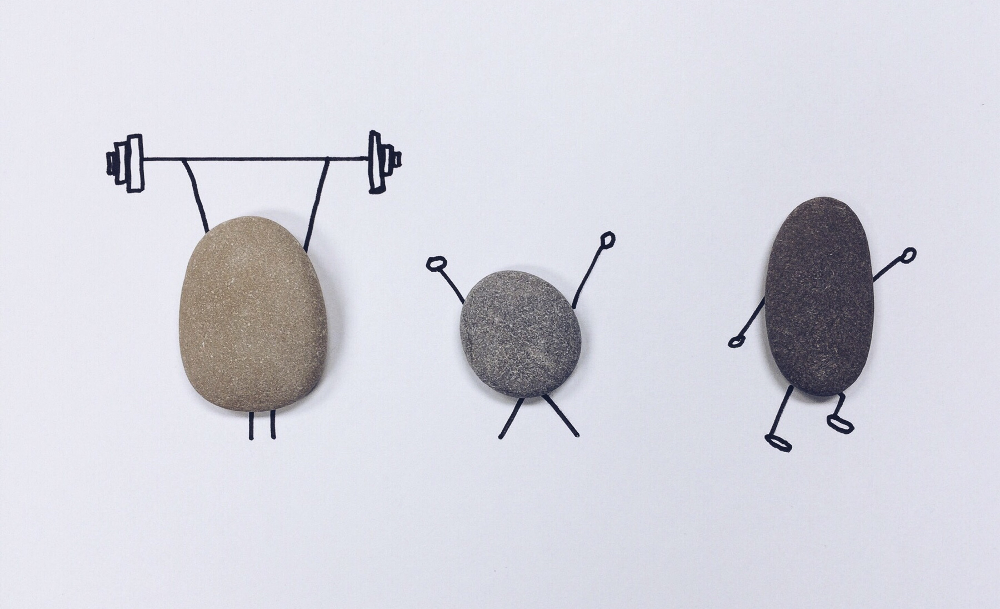

My Blog
工作室心得
参加工作室培训的这两个月里，我从一个什么都不知
道的小白，变成现在对前端的部分代码还算略知一二吧。
每次在参加培训时，或者在向学姐学长请教时，我常
常会想，他们只比我们早入学一年而已，只比我们多学
了一年而已，就可以培训我们，可以熟练的写一个网页，
可以在那种像githup那种全英文的网页里游刃有余的
操作。无可否认，我也想成为这样的人。
现在细细回想，我大概学到了如下的内容吧。
1、对html和css里的知识有了了解，像div这种简
单的插盒子已经比较熟练了吧。别的那种登陆框什
么的比较生疏，但是百度一下以后自己也能写出来
2、其实对JS还是比较无知与茫然吧。很多函数什么
的都不了解，唯一庆幸的是自己有学C语言，还会有
什么相通之处。但是，这也好像没什么优势。
还有我想说，其实我每次对工作室的培训都很重视，
周六晚上优先考虑工作室培训。而且也很想做完每次学姐学
长布置的作业，但是每次培训下来都是一脸懵逼真的哎哟我
的天。然后做作业就不知道如何下手就只能看自己买的JS的
书，然后在看书的过程中，学到点什么，再把上个星期没做
完的作业交上去。我会努力的，入门很难，但是希望自己以
后能多抽时间看书,看教程，完善自己。
个人简介
- 姓名:杨雨涵
- 性别：女孩子啦
- 个性：开朗活泼无厘头
- 技能：一般比较智障，偶尔智商在线。
- 爱好：逛街，追剧，做PPT,目前对前端也有很大的兴趣。
- 优点:开朗啦，幽默啦。也比较执着吧。
- 缺点：稍许浮躁，瞌睡多，不喜欢运动。
- 总结：一个比较普通的，刚踏上编程之路的妹子。